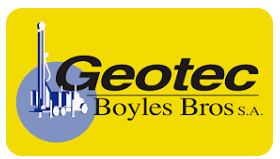

Los datos del equipo vienen cargados y se pueden editar
02
Trabajador que recibe
Datos del responsable del equipo
VISTA PREVIAAsignación de camioneta

Sres.
Usuarios de camionetas
Presente
Ref.: Asignación de camionetas por supervisor.
Mediante la presente, se deja constancia de entrega de camioneta modelo —, PPU: —, con número interno “—”.
Todo daño provocado en esta herramienta de trabajo deberá ser debidamente informado a la jefatura directa.
De comprobarse un mal uso de la camioneta, la Administración del Contrato estará facultada para aplicar las medidas administrativas correspondientes.
Reciben conforme:
NOMBRE
CARGO
RUT
FIRMA
Atentamente,
Jaime AguileraAdministrador de ContratoGeotec Boyles Bros
COMODATO FOLIO NR: —
En Compañía Minera Doña Inés de Collahuasi (en adelante CMDIC), a —, entre GEOTEC BOYLES BROS S.A. (en adelante GEOTEC), representada para este efecto por su Administrador de Contrato Jaime F. Aguilera Beroiza, R.U.T. Nº 15.611.829-2, CMDIC, representada para este efecto por su SI de Recursos Minerales Jorge E. Pérez Castañeda, R.U.T. N° 14.347.227-2, por una parte, y, por la otra — R.U.T. — en adelante indistintamente “El trabajador”, se suscribe el siguiente Contrato de Comodato.
PRIMERO: Las partes declaran que:
Para los fines del proyecto así como para el cumplimiento de las labores de sus trabajadores se hace necesario proporcionarles a estos equipos tecnológico como herramientas de trabajo, los que tienen un alto valor comercial.
Atendido lo anterior es que se suscribe el siguiente contrato de comodato.
SEGUNDO: CMDIC es dueña del equipo, con las siguientes características:
Tipo de equipo
Tablet
Marca
—
Modelo
—
Número de serie
—
Valor
—
TERCERO: Por el presente instrumento CMDIC y GEOTEC viene en dar en comodato gratuito la especie antes mencionada al Trabajador, por el plazo que se indica en la cláusula Quinto, quien lo recibe de acuerdo a las estipulaciones que se indican.
CUARTO: El Trabajador podrá hacer uso del bien antes indicado, bajo las siguientes condiciones:
Ser utilizado exclusivamente por el trabajador en las labores propias a sus funciones que realiza en faena Collahuasi.
Podrá trasladar y transportar el bien libremente en el desarrollo de sus funciones e incluso fuera del horario de sus labores.
Utilizar exclusivamente para labores del proyecto y no está permitido que sea utilizado por terceras personas que no sean el Trabajador. En caso de fuerza mayor, el uso por otro Trabajador tiene que ser autorizado previamente, y por escrito, por el Supervisor Directo del Trabajador o por supervisor CMDIC del área.
El trabajador asume toda la responsabilidad sobre su buen uso y funcionamiento, así como de proporcionarle el cuidado y la seguridad para su conservación en condiciones óptimas de trabajo y presentación.
COMODATO FOLIO NR: —
QUINTO: Se otorga este préstamo gratuito por el lapso en que el trabajador permanezca en proyecto CMDIC, por lo cual por cualquier causa que termine la relación laboral o salida del Trabajador del proyecto, terminará de pleno derecho e ipsofacto el presente comodato, debiendo restituirse la especie.
SEXTO: La empresa se reserva la facultad de solicitar la restitución del bien en cualquier tiempo, bastando para ello una comunicación escrita o verbal.
SEPTIMO: Las tareas de mantenimiento preventivo y correctivo son responsabilidad del Departamento de Informática de Geotec o CMDIC por consiguiente, bajo ninguna circunstancia el Trabajador deberá instalar programas adicionales, dispositivos o modificar la configuración del equipo asignado.
OCTAVO: La pérdida de la especie, así como los costos que involucren la destrucción, deterioro y/o reparación de la especie, serán asumidos de manera íntegra por parte del trabajador; y en caso de que el Trabajador deba restituir su valor, éste estará dado por el valor de reemplazo de un bien de las mismas características técnicas que exista en el mercado.
En todo uso, para efecto de cálculo del valor de reemplazo, se tomará el valor asignado en la cláusula segunda con un periodo de vida útil de 36 meses, amortizable mensualmente siendo siempre el valor mínimo a considerar de $200.000.
En el evento que no pague el trabajador el valor del bien, o no lo restituya cuando le sea requerido o al término de la relación laboral, el Trabajador autoriza a la empresa para que dicho valor sea descontado mensualmente de su liquidación de remuneración o íntegramente de su respectivo finiquito laboral.
El Trabajador autoriza a la empresa, desde ya, para tomar posesión material de la especie dada en comodato, en el momento que ésta lo resuelva, incluso sin aviso ni comunicación previa al trabajador.
Asimismo, se conviene que el comodato que se celebra sobre la especie no es exclusivo, de modo que la empresa se reserva el derecho para darla en comodato o disponer su uso en forma conjunta, por otros trabajadores, estando el trabajador obligado a permitir dicho uso conjunto.
El presente documento se firma en tres copias, las cuales una queda en poder de Geotec, otra en poder de CMDIC y la otra en poder del Trabajador.